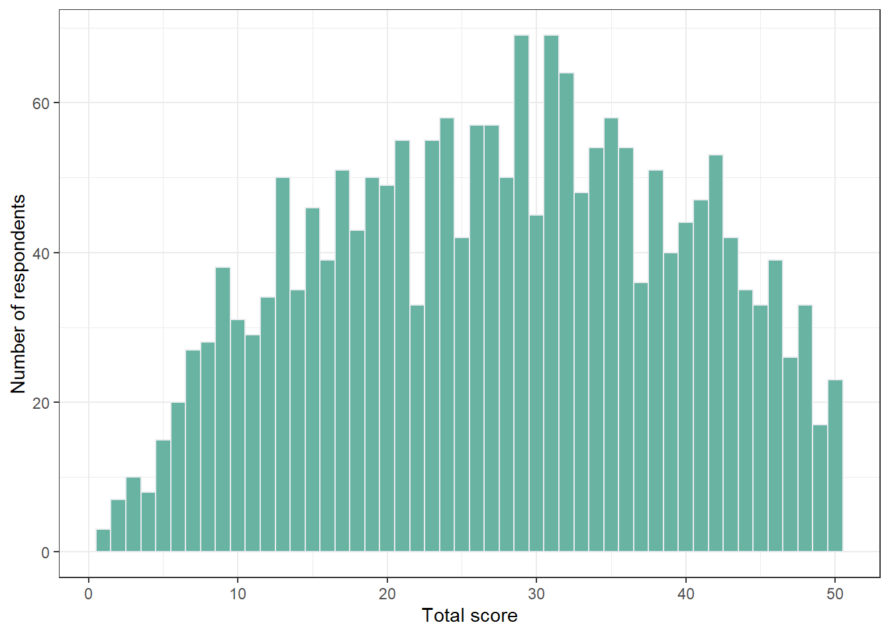
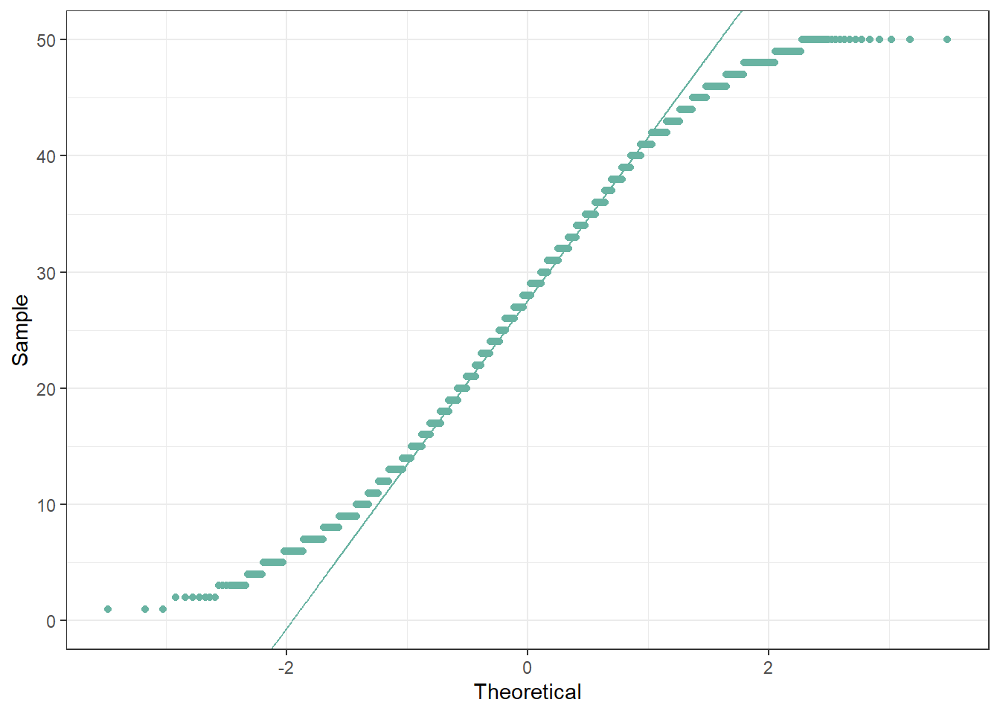
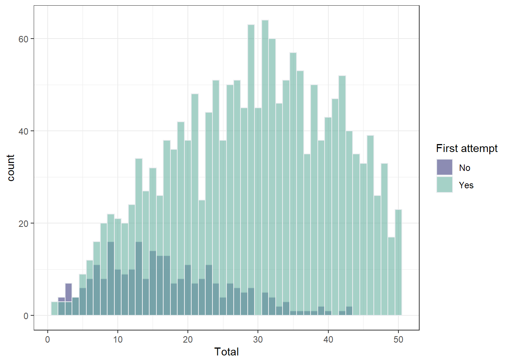

Selected Topics of Psychometrics (NMST570)
Homework Assignment 1: Introduction (due: Oct 18, 2021)
Kateřina Hudáčová, Benjamín Kunc
1. Read and comment on the first chapter on https://perusall.com. [2 pts]
Done.
2. Run the code for the first chapter, available on course webpage http://www.cs.cas.cz/martinkova/NMST570.html.
Done.
3. Complete the CAPlearnR online tutorials for Introduction and Measurement data. Attach certificates. [4 pts]
Note: If you meet any issues, contact the the TA or the instructor before 8 AM of the due date.
Completed.
4. Project preparation: Explore the Czech matura data as described below. You can work with 1-2 teammates on this task. All teammates names have to be included on your answer sheet. [4 pts]
4a. The Czech matura sample data is available in the ShinyItemAnalysis package as CZmaturaS. The CZmaturaS.csv file is available on course webpage. Explore the CZmaturaS dataset with R and/or ShinyItemAnalysis. Load the data and write some basic description of the data below. How many rows and columns does it contain, what do they represent?
HINT: Use the
library()function to load the package, and thehelp()function (or?) to learn more about the dataset. Use functionsdim(),names(),head(),str(), and/orsummary()to explore the data. Check how variablesSchTypeGYandTotalwere computed.
library(tidyverse)
library(ShinyItemAnalysis)
library(shiny)
library(utils)
library(ggplot2)
library(psych)#Package documentation
?"ShinyItemAnalysis-package"#Loading the CzmaturaS dataset
data("CZmaturaS")dim(CZmaturaS)## [1] 2000 73
names(CZmaturaS)
names(CZmaturaS)## [1] "SchType" "FirstAtt" "SchTypeGY" "o1" "o2" "o3.1" "o3.2" "o4" "o5" "o6" "o7" "o8.1" "o8.2" "o8.3"
## [15] "o9.1" "o9.2" "o10" "o11" "o12" "o13" "o14" "o15" "o16.1" "o16.2" "o16.3" "o16.4" "o17" "o18"
## [29] "o19" "o20" "o21" "o22" "o23" "o24" "o25.1" "o25.2" "o25.3" "o25.4" "o26.1" "o26.2" "b1" "b2"
## [43] "b3.1" "b3.2" "b4" "b5" "b6" "b7" "b8.1" "b8.2" "b8.3" "b9.1" "b9.2" "b10" "b11" "b12"
## [57] "b13" "b14" "b15" "b16" "b17" "b18" "b19" "b20" "b21" "b22" "b23" "b24" "b25" "b26"
## [71] "Total" "IRTscore" "IRTscoreSE"
head(CZmaturaS)
head(CZmaturaS)## SchType FirstAtt SchTypeGY o1 o2 o3.1 o3.2 o4 o5 o6 o7 o8.1 o8.2 o8.3 o9.1 o9.2 o10 o11 o12 o13 o14 o15 o16.1 o16.2 o16.3 o16.4 o17 o18 o19 o20 o21 o22 o23 o24 o25.1 o25.2 o25.3 o25.4 o26.1
## 1 GY4 1 1 1 1 0 0 2 0 1 2 1 1 1 1 1 1 NA 1 1 3 2 2 2 2 2 4 3 4 5 4 1 3 1 3 6 2 4 5
## 2 ST1 1 0 1 1 0 0 2 2 1 2 1 1 1 1 0 1 0 1 0 0 2 1 2 1 2 4 3 2 4 4 1 3 2 3 6 1 2 5
## 3 ST1 1 0 0 1 NA NA 2 2 1 2 NA NA NA 1 1 1 1 0 0 3 2 1 1 1 1 1 3 4 1 5 2 5 3 3 6 1 5 5
## 4 ST1 0 0 1 1 0 0 0 NA 1 NA 1 1 0 NA NA 1 NA 1 0 NA 0 2 2 2 2 4 2 3 1 4 1 5 3 3 6 1 2 5
## 5 UTE 1 0 1 0 1 0 2 2 1 2 1 1 0 1 1 NA 0 1 1 0 1 2 1 2 1 5 4 4 2 4 5 5 2 5 6 1 2 5
## 6 GY8 0 1 0 0 NA NA 0 NA NA NA 0 0 0 1 1 1 0 0 1 0 0 1 1 1 1 4 3 4 5 4 1 4 3 3 6 1 2 5
## o26.2 b1 b2 b3.1 b3.2 b4 b5 b6 b7 b8.1 b8.2 b8.3 b9.1 b9.2 b10 b11 b12 b13 b14 b15 b16 b17 b18 b19 b20 b21 b22 b23 b24 b25 b26 Total IRTscore IRTscoreSE
## 1 4 1 1 0 0 2 0 1 2 1 1 1 1 1 1 0 1 1 3 2 0 2 0 2 0 2 2 0 0 2 1 31 0.342881201 0.2661316
## 2 3 1 1 0 0 2 2 1 2 1 1 1 1 0 1 0 1 0 0 2 0 2 0 0 0 2 2 0 0 4 3 30 0.295988773 0.2630337
## 3 3 0 1 0 0 2 2 1 2 0 0 0 1 1 1 1 0 0 3 2 2 0 0 2 2 0 0 2 2 3 3 33 -0.005917671 0.2468540
## 4 3 1 1 0 0 0 0 1 0 1 1 0 0 0 1 0 1 0 0 0 0 2 2 0 2 2 2 2 2 4 3 28 -0.145702261 0.2422359
## 5 2 1 0 1 0 2 2 1 2 1 1 0 1 1 0 0 1 1 0 1 0 0 0 2 0 2 0 2 0 3 1 26 -0.085769847 0.2439559
## 6 3 0 0 0 0 0 0 0 0 0 0 0 1 1 1 0 0 1 0 0 2 2 0 2 0 2 2 0 2 4 3 23 -0.735423400 0.2498404
str(CZmaturaS)
str(CZmaturaS)## 'data.frame': 2000 obs. of 73 variables:
## $ SchType : Factor w/ 16 levels "GY4","GY6","GY8",..: 1 10 10 10 16 3 10 1 1 10 ...
## $ FirstAtt : num 1 1 1 0 1 0 0 1 1 0 ...
## $ SchTypeGY : num 1 0 0 0 0 1 0 1 1 0 ...
## $ o1 : num 1 1 0 1 1 0 0 1 0 0 ...
## $ o2 : num 1 1 1 1 0 0 0 1 1 1 ...
## $ o3.1 : num 0 0 NA 0 1 NA NA NA 0 1 ...
## $ o3.2 : num 0 0 NA 0 0 NA NA NA 0 1 ...
## $ o4 : num 2 2 2 0 2 0 2 2 2 2 ...
## $ o5 : num 0 2 2 NA 2 NA 2 2 2 2 ...
## $ o6 : num 1 1 1 1 1 NA 0 1 1 1 ...
## $ o7 : num 2 2 2 NA 2 NA 2 2 2 2 ...
## $ o8.1 : num 1 1 NA 1 1 0 1 1 0 1 ...
## $ o8.2 : num 1 1 NA 1 1 0 1 1 0 1 ...
## $ o8.3 : num 1 1 NA 0 0 0 1 1 0 1 ...
## $ o9.1 : num 1 1 1 NA 1 1 0 1 1 1 ...
## $ o9.2 : num 1 0 1 NA 1 1 0 1 1 0 ...
## $ o10 : num 1 1 1 1 NA 1 0 1 0 0 ...
## $ o11 : num NA 0 1 NA 0 0 0 1 1 1 ...
## $ o12 : num 1 1 0 1 1 0 0 1 0 1 ...
## $ o13 : num 1 0 0 0 1 1 NA 0 0 0 ...
## $ o14 : num 3 0 3 NA 0 0 NA 3 0 0 ...
## $ o15 : num 2 2 2 0 1 0 0 2 1 0 ...
## $ o16.1 : num 2 1 1 2 2 1 2 1 1 1 ...
## $ o16.2 : num 2 2 1 2 1 1 1 1 1 1 ...
## $ o16.3 : num 2 1 1 2 2 1 1 1 1 1 ...
## $ o16.4 : num 2 2 1 2 1 1 2 1 1 1 ...
## $ o17 : num 4 4 1 4 5 4 2 4 5 4 ...
## $ o18 : num 3 3 3 2 4 3 3 2 3 2 ...
## $ o19 : num 4 2 4 3 4 4 1 4 4 4 ...
## $ o20 : num 5 4 1 1 2 5 2 1 2 1 ...
## $ o21 : num 4 4 5 4 4 4 4 4 1 4 ...
## $ o22 : num 1 1 2 1 5 1 3 1 2 1 ...
## $ o23 : num 3 3 5 5 5 4 5 5 5 5 ...
## $ o24 : num 1 2 3 3 2 3 2 2 5 2 ...
## $ o25.1 : num 3 3 3 3 5 3 4 3 4 3 ...
## $ o25.2 : num 6 6 6 6 6 6 2 6 5 6 ...
## $ o25.3 : num 2 1 1 1 1 1 5 1 2 1 ...
## $ o25.4 : num 4 2 5 2 2 2 1 2 6 2 ...
## $ o26.1 : num 5 5 5 5 5 5 1 5 2 5 ...
## $ o26.2 : num 4 3 3 3 2 3 3 3 4 3 ...
## $ b1 : num 1 1 0 1 1 0 0 1 0 0 ...
## $ b2 : num 1 1 1 1 0 0 0 1 1 1 ...
## $ b3.1 : num 0 0 0 0 1 0 0 0 0 1 ...
## $ b3.2 : num 0 0 0 0 0 0 0 0 0 1 ...
## $ b4 : num 2 2 2 0 2 0 2 2 2 2 ...
## $ b5 : num 0 2 2 0 2 0 2 2 2 2 ...
## $ b6 : num 1 1 1 1 1 0 0 1 1 1 ...
## $ b7 : num 2 2 2 0 2 0 2 2 2 2 ...
## $ b8.1 : num 1 1 0 1 1 0 1 1 0 1 ...
## $ b8.2 : num 1 1 0 1 1 0 1 1 0 1 ...
## $ b8.3 : num 1 1 0 0 0 0 1 1 0 1 ...
## $ b9.1 : num 1 1 1 0 1 1 0 1 1 1 ...
## $ b9.2 : num 1 0 1 0 1 1 0 1 1 0 ...
## $ b10 : num 1 1 1 1 0 1 0 1 0 0 ...
## $ b11 : num 0 0 1 0 0 0 0 1 1 1 ...
## $ b12 : num 1 1 0 1 1 0 0 1 0 1 ...
## $ b13 : num 1 0 0 0 1 1 0 0 0 0 ...
## $ b14 : num 3 0 3 0 0 0 0 3 0 0 ...
## $ b15 : num 2 2 2 0 1 0 0 2 1 0 ...
## $ b16 : num 0 0 2 0 0 2 0 2 2 2 ...
## $ b17 : num 2 2 0 2 0 2 0 2 0 2 ...
## $ b18 : num 0 0 0 2 0 0 0 2 0 2 ...
## $ b19 : num 2 0 2 0 2 2 0 2 2 2 ...
## $ b20 : num 0 0 2 2 0 0 0 2 0 2 ...
## $ b21 : num 2 2 0 2 2 2 2 2 0 2 ...
## $ b22 : num 2 2 0 2 0 2 0 2 0 2 ...
## $ b23 : num 0 0 2 2 2 0 2 2 2 2 ...
## $ b24 : num 0 0 2 2 0 2 0 0 0 0 ...
## $ b25 : num 2 4 3 4 3 4 0 4 0 4 ...
## $ b26 : num 1 3 3 3 1 3 2 3 0 3 ...
## $ Total : num 31 30 33 28 26 23 15 45 18 39 ...
## $ IRTscore : num 0.34288 0.29599 -0.00592 -0.1457 -0.08577 ...
## $ IRTscoreSE: num 0.266 0.263 0.247 0.242 0.244 ...
summary(CZmaturaS)
summary(CZmaturaS)## SchType FirstAtt SchTypeGY o1 o2 o3.1 o3.2 o4 o5 o6 o7
## GY4 :451 Min. :0.000 Min. :0.0000 Min. :0.0000 Min. :0.0000 Min. :0.0000 Min. :0.000 Min. :0.000 Min. :0.000 Min. :0.0000 Min. :0.000
## ST1 :432 1st Qu.:1.000 1st Qu.:0.0000 1st Qu.:0.0000 1st Qu.:0.0000 1st Qu.:0.0000 1st Qu.:0.000 1st Qu.:2.000 1st Qu.:1.000 1st Qu.:1.0000 1st Qu.:1.000
## GY8 :343 Median :1.000 Median :0.0000 Median :1.0000 Median :1.0000 Median :0.0000 Median :0.000 Median :2.000 Median :2.000 Median :1.0000 Median :2.000
## NOS :152 Mean :0.866 Mean :0.4205 Mean :0.6334 Mean :0.6141 Mean :0.3865 Mean :0.227 Mean :1.657 Mean :1.415 Mean :0.8078 Mean :1.541
## UTE :121 3rd Qu.:1.000 3rd Qu.:1.0000 3rd Qu.:1.0000 3rd Qu.:1.0000 3rd Qu.:1.0000 3rd Qu.:0.000 3rd Qu.:2.000 3rd Qu.:2.000 3rd Qu.:1.0000 3rd Qu.:2.000
## LYC : 83 Max. :1.000 Max. :1.0000 Max. :1.0000 Max. :1.0000 Max. :1.0000 Max. :1.000 Max. :2.000 Max. :2.000 Max. :1.0000 Max. :2.000
## (Other):418 NA's :88 NA's :204 NA's :828 NA's :828 NA's :128 NA's :214 NA's :314 NA's :375
## o8.1 o8.2 o8.3 o9.1 o9.2 o10 o11 o12 o13 o14 o15
## Min. :0.0000 Min. :0.0000 Min. :0.0000 Min. :0.0000 Min. :0.0000 Min. :0.0000 Min. :0.0000 Min. :0.0000 Min. :0.0000 Min. :0.000 Min. :0.000
## 1st Qu.:1.0000 1st Qu.:1.0000 1st Qu.:0.0000 1st Qu.:1.0000 1st Qu.:0.0000 1st Qu.:0.0000 1st Qu.:0.0000 1st Qu.:0.0000 1st Qu.:0.0000 1st Qu.:0.000 1st Qu.:0.000
## Median :1.0000 Median :1.0000 Median :1.0000 Median :1.0000 Median :1.0000 Median :1.0000 Median :0.0000 Median :1.0000 Median :0.0000 Median :3.000 Median :2.000
## Mean :0.8779 Mean :0.7895 Mean :0.6093 Mean :0.8468 Mean :0.6518 Mean :0.7378 Mean :0.4947 Mean :0.6295 Mean :0.4373 Mean :1.667 Mean :1.208
## 3rd Qu.:1.0000 3rd Qu.:1.0000 3rd Qu.:1.0000 3rd Qu.:1.0000 3rd Qu.:1.0000 3rd Qu.:1.0000 3rd Qu.:1.0000 3rd Qu.:1.0000 3rd Qu.:1.0000 3rd Qu.:3.000 3rd Qu.:2.000
## Max. :1.0000 Max. :1.0000 Max. :1.0000 Max. :1.0000 Max. :1.0000 Max. :1.0000 Max. :1.0000 Max. :1.0000 Max. :1.0000 Max. :3.000 Max. :2.000
## NA's :280 NA's :280 NA's :280 NA's :179 NA's :179 NA's :234 NA's :387 NA's :178 NA's :150 NA's :671 NA's :408
## o16.1 o16.2 o16.3 o16.4 o17 o18 o19 o20 o21 o22 o23 o24
## Min. :1.000 Min. :1.000 Min. :1.000 Min. :1.000 Min. :1.000 Min. :1.000 Min. :1.000 Min. :1.000 Min. :1.000 Min. :1.00 Min. :1.000 Min. :1.000
## 1st Qu.:1.000 1st Qu.:1.000 1st Qu.:1.000 1st Qu.:1.000 1st Qu.:3.000 1st Qu.:2.000 1st Qu.:2.000 1st Qu.:1.000 1st Qu.:3.000 1st Qu.:1.00 1st Qu.:3.000 1st Qu.:2.000
## Median :1.000 Median :1.000 Median :1.000 Median :1.000 Median :4.000 Median :2.000 Median :4.000 Median :3.000 Median :4.000 Median :1.00 Median :5.000 Median :3.000
## Mean :1.433 Mean :1.296 Mean :1.313 Mean :1.327 Mean :3.496 Mean :2.458 Mean :3.066 Mean :2.683 Mean :3.577 Mean :2.02 Mean :3.913 Mean :2.774
## 3rd Qu.:2.000 3rd Qu.:2.000 3rd Qu.:2.000 3rd Qu.:2.000 3rd Qu.:4.000 3rd Qu.:3.000 3rd Qu.:4.000 3rd Qu.:4.000 3rd Qu.:4.000 3rd Qu.:3.00 3rd Qu.:5.000 3rd Qu.:3.000
## Max. :2.000 Max. :2.000 Max. :2.000 Max. :2.000 Max. :5.000 Max. :5.000 Max. :5.000 Max. :5.000 Max. :5.000 Max. :5.00 Max. :5.000 Max. :5.000
## NA's :29 NA's :45 NA's :47 NA's :54 NA's :15 NA's :46 NA's :37 NA's :64 NA's :48 NA's :55 NA's :19 NA's :31
## o25.1 o25.2 o25.3 o25.4 o26.1 o26.2 b1 b2 b3.1 b3.2 b4 b5
## Min. :1.000 Min. :1.000 Min. :1.000 Min. :1.000 Min. :1.000 Min. :1.000 Min. :0.0000 Min. :0.0000 Min. :0.0000 Min. :0.000 Min. :0.00 Min. :0.000
## 1st Qu.:3.000 1st Qu.:6.000 1st Qu.:1.000 1st Qu.:2.000 1st Qu.:5.000 1st Qu.:3.000 1st Qu.:0.0000 1st Qu.:0.0000 1st Qu.:0.0000 1st Qu.:0.000 1st Qu.:2.00 1st Qu.:0.000
## Median :3.000 Median :6.000 Median :1.000 Median :2.000 Median :5.000 Median :3.000 Median :1.0000 Median :1.0000 Median :0.0000 Median :0.000 Median :2.00 Median :2.000
## Mean :3.115 Mean :5.431 Mean :1.884 Mean :2.407 Mean :4.565 Mean :2.873 Mean :0.6055 Mean :0.5515 Mean :0.2265 Mean :0.133 Mean :1.55 Mean :1.264
## 3rd Qu.:3.000 3rd Qu.:6.000 3rd Qu.:2.000 3rd Qu.:3.000 3rd Qu.:5.000 3rd Qu.:3.000 3rd Qu.:1.0000 3rd Qu.:1.0000 3rd Qu.:0.0000 3rd Qu.:0.000 3rd Qu.:2.00 3rd Qu.:2.000
## Max. :6.000 Max. :6.000 Max. :6.000 Max. :6.000 Max. :5.000 Max. :5.000 Max. :1.0000 Max. :1.0000 Max. :1.0000 Max. :1.000 Max. :2.00 Max. :2.000
## NA's :40 NA's :45 NA's :55 NA's :75 NA's :17 NA's :24
## b6 b7 b8.1 b8.2 b8.3 b9.1 b9.2 b10 b11 b12 b13
## Min. :0.000 Min. :0.000 Min. :0.000 Min. :0.000 Min. :0.000 Min. :0.000 Min. :0.0000 Min. :0.0000 Min. :0.000 Min. :0.0000 Min. :0.0000
## 1st Qu.:0.000 1st Qu.:0.000 1st Qu.:1.000 1st Qu.:0.000 1st Qu.:0.000 1st Qu.:1.000 1st Qu.:0.0000 1st Qu.:0.0000 1st Qu.:0.000 1st Qu.:0.0000 1st Qu.:0.0000
## Median :1.000 Median :2.000 Median :1.000 Median :1.000 Median :1.000 Median :1.000 Median :1.0000 Median :1.0000 Median :0.000 Median :1.0000 Median :0.0000
## Mean :0.681 Mean :1.252 Mean :0.755 Mean :0.679 Mean :0.524 Mean :0.771 Mean :0.5935 Mean :0.6515 Mean :0.399 Mean :0.5735 Mean :0.4045
## 3rd Qu.:1.000 3rd Qu.:2.000 3rd Qu.:1.000 3rd Qu.:1.000 3rd Qu.:1.000 3rd Qu.:1.000 3rd Qu.:1.0000 3rd Qu.:1.0000 3rd Qu.:1.000 3rd Qu.:1.0000 3rd Qu.:1.0000
## Max. :1.000 Max. :2.000 Max. :1.000 Max. :1.000 Max. :1.000 Max. :1.000 Max. :1.0000 Max. :1.0000 Max. :1.000 Max. :1.0000 Max. :1.0000
##
## b14 b15 b16 b17 b18 b19 b20 b21 b22 b23 b24 b25
## Min. :0.000 Min. :0.000 Min. :0.0000 Min. :0.000 Min. :0.000 Min. :0.000 Min. :0.000 Min. :0.000 Min. :0.000 Min. :0.000 Min. :0.000 Min. :0.00
## 1st Qu.:0.000 1st Qu.:0.000 1st Qu.:0.0000 1st Qu.:0.000 1st Qu.:0.000 1st Qu.:0.000 1st Qu.:0.000 1st Qu.:0.000 1st Qu.:0.000 1st Qu.:0.000 1st Qu.:0.000 1st Qu.:1.00
## Median :0.000 Median :1.000 Median :1.0000 Median :2.000 Median :2.000 Median :0.000 Median :0.000 Median :2.000 Median :2.000 Median :2.000 Median :0.000 Median :3.00
## Mean :1.108 Mean :0.962 Mean :0.8435 Mean :1.128 Mean :1.207 Mean :0.995 Mean :0.693 Mean :1.242 Mean :1.205 Mean :1.094 Mean :0.787 Mean :2.59
## 3rd Qu.:3.000 3rd Qu.:2.000 3rd Qu.:2.0000 3rd Qu.:2.000 3rd Qu.:2.000 3rd Qu.:2.000 3rd Qu.:2.000 3rd Qu.:2.000 3rd Qu.:2.000 3rd Qu.:2.000 3rd Qu.:2.000 3rd Qu.:4.00
## Max. :3.000 Max. :2.000 Max. :2.0000 Max. :2.000 Max. :2.000 Max. :2.000 Max. :2.000 Max. :2.000 Max. :2.000 Max. :2.000 Max. :2.000 Max. :4.00
##
## b26 Total IRTscore IRTscoreSE
## Min. :0.000 Min. : 1.00 Min. :-2.51891 Min. :0.2396
## 1st Qu.:1.000 1st Qu.:18.00 1st Qu.:-0.66107 1st Qu.:0.2458
## Median :2.000 Median :28.00 Median :-0.04423 Median :0.2665
## Mean :2.126 Mean :27.59 Mean :-0.01308 Mean :0.2895
## 3rd Qu.:3.000 3rd Qu.:37.00 3rd Qu.: 0.60386 3rd Qu.:0.3103
## Max. :3.000 Max. :50.00 Max. : 2.31246 Max. :0.5404
## The CZmaturaS dataset contains a sample of 2000 students’ results from the czech matura exam in Mathematics. The dataset consists of 2000 rows and 73 columns. The code of the given school type is stored in the variable SchType, a factor variable with 16 levels. FirstAtt provides information about whether it was the student’s first attempt at the exam or not. It is set to a numeric variable, although it only takes on two values (binary). As can be deduced from the summary() function’s output, approximately 87 % students in this dataset were taking the exam for the first time. SchTypeGY was computed from the SchType variable, ascribing value ‘1’ to all schools of type gymnázium and value ‘0’ to all other school types (binary). It is also set to a numeric variable. The summary() function’s output tells us, that circa 42 % of students in this sample were attending a gymnázium. Columns o1–o26.2 contain item answers, columns b1–b26 represent scored item answers. Total stands for total score and was computed as the sum of item scores for each student. Total spans the range 1 to 50 with a mean score of 27.59 and a median score of 28.
4b. Provide descriptive statistics and plots for all relevant variables. Are the total scores approximately normally distributed? Why/Why not?
#Descriptive statistics of total scores
describe(CZmaturaS$Total, na.rm = FALSE)## vars n mean sd median trimmed mad min max range skew kurtosis se
## X1 1 2000 27.59 11.95 28 27.73 13.34 1 50 49 -0.09 -0.93 0.27#Descriptive statistics of total scores grouped by 'SchTypeGY'
describeBy(CZmaturaS[, c("SchTypeGY", "Total")], group = "SchTypeGY")##
## Descriptive statistics by group
## SchTypeGY: 0
## vars n mean sd median trimmed mad min max range skew kurtosis se
## SchTypeGY 1 1159 0.00 0.00 0 0.00 0.00 0 0 0 NaN NaN 0.00
## Total 2 1159 22.13 10.67 21 21.77 11.86 1 50 49 0.25 -0.75 0.31
## --------------------------------------------------------------------------------------------------------------------------------------------------
## SchTypeGY: 1
## vars n mean sd median trimmed mad min max range skew kurtosis se
## SchTypeGY 1 841 1.00 0.00 1 1.00 0.00 1 1 0 NaN NaN 0.00
## Total 2 841 35.12 9.24 35 35.62 10.38 5 50 45 -0.42 -0.47 0.32#Histogram of total scores
ggplot(CZmaturaS, aes(Total)) +
geom_histogram(binwidth = 1, fill = "#69b3a2", col="#e9ecef") +
xlab("Total score") +
ylab("Number of respondents") +
theme_bw()
#Q-Q plot of total scores
ggpubr::ggqqplot(CZmaturaS$Total, ylim=c(0,50), col ="#69b3a2") +
theme_bw()
#Histogram of total scores grouped by 'SchTypeGY'
ggplot(CZmaturaS, aes(x=Total, fill=(as.factor(SchTypeGY)))) +
geom_histogram(color="#e9ecef",
alpha=0.6,
position = 'identity',
binwidth = 1) +
scale_fill_manual(values=c("#69b3a2", "#404080"),
name = "School type",
labels = c("Other", "Gymnázium")) +
theme_bw()
#Descriptive statistics of total scores grouped by 'FirstAtt'
describeBy(CZmaturaS[, c("FirstAtt", "Total")], group = "FirstAtt")##
## Descriptive statistics by group
## FirstAtt: 0
## vars n mean sd median trimmed mad min max range skew kurtosis se
## FirstAtt 1 268 0.0 0.00 0 0.00 0.00 0 0 0 NaN NaN 0.00
## Total 2 268 16.9 8.94 16 16.31 9.64 2 43 41 0.58 -0.13 0.55
## --------------------------------------------------------------------------------------------------------------------------------------------------
## FirstAtt: 1
## vars n mean sd median trimmed mad min max range skew kurtosis se
## FirstAtt 1 1732 1.00 0.0 1 1.00 0.00 1 1 0 NaN NaN 0.00
## Total 2 1732 29.25 11.5 30 29.55 13.34 1 50 49 -0.2 -0.81 0.28#Histogram of total scores grouped by 'FirstAtt'
ggplot(CZmaturaS, aes(x=Total, fill=(as.factor(FirstAtt)))) +
geom_histogram(color="#e9ecef",
alpha=0.6,
position = 'identity',
binwidth = 1) +
scale_fill_manual(values=c("#404080", "#69b3a2"), name = "First attempt", labels = c("No", "Yes")) +
theme_bw()
The total scores do not follow a normal distribution. The median (28) is larger than the mean (27.59) which suggests a slight negative skew (-0.09). The kurtosis is negative as well (-0.93), thus pointing to a somewhat platykurtic distribution. Although the histogram of total scores does not seem obviously non-normal, the Q-Q plot shows a clear deviance from the normal distribution around the tails. After plotting a separate histogram for schools of type gymnázium, it becomes apparent that the underlying distribution is not unimodal Gymnázium students are, on average, more successful (mean total score of 35.12) than other students (mean total score of 22.13). The distribution of the gymnázium students’ total scores has a negative skew (-0.42), whereas the distribution of other students’ total scores is positively-skewed (0.25). Similarly, the distributions of total scores differ when the variable FirstAtt is considered. The sample of students who are repeating the exam is quite small (n = 268). Nonetheless, their average total score (16.9) is distinctly lower than the total score of students who are taking the exam for the first time (29.25), and the distribution of their scores is positively skewed (0.58).
4c Compute the Z-scores, T-scores, percentiles, and success rate for all respondents. Interpret the results for the first respondent.
zscore <- scale(CZmaturaS$Total)
tscore <- 10 * zscore + 50
ecdf <- ecdf(CZmaturaS$Total)
percentiles <- as.matrix(100 * round(ecdf(CZmaturaS$Total), 2))
success_rate <- as.matrix(100 * (CZmaturaS$Total / max(CZmaturaS$Total)))
data.frame(zscore[1,], tscore[1,], percentiles[1,], success_rate[1,])## zscore.1... tscore.1... percentiles.1... success_rate.1...
## 1 0.2848704 52.8487 60 62The first respondent has a Z-score of circa 0.28, which means their total score lies 0.28 times the standard deviation above the mean of this sample (Z-score = 0). The T-score of this student is approximately 52.85 which again points to an above-average (50) result. Their percentile is 60, meaning 60 % of respondents in this sample scored less than or equal to the first respondent. The respondent’s success rate is 62, which means their total score corresponds to 62 % of the best total score in this sample (50).
4d Work with ShinyItemAnalysis interactive app locally or online at https://shiny.cs.cas.cz/ShinyItemAnalysis/ or https://cemp.shinyapps.io/ShinyItemAnalysis/. Upload the CZmaturaS.csv data files into the interactive app and explore the different tabs of the app. Download, attach and interpret the 3-color histogram of the summary scores.
# colors by cut-score
cut <- median(CZmaturaS$Total) # cut-score
color <- c(rep("red", cut - min(CZmaturaS$Total)), "gray", rep("blue", max(CZmaturaS$Total) - cut))
df <- data.frame(CZmaturaS$Total)
# 3-color histogram
ggplot(df, aes(CZmaturaS.Total)) +
geom_histogram(binwidth = 1, fill = color, col = "black") +
xlab("Total score") +
ylab("Number of respondents") +
theme_bw()
The 3-color histogram depicts the total scores with a cut-score – in this case, the median (28). The cut-score is represented by the grey column, which divides the sample into two equally sized groups. Students who scored below the median of this sample are red, students who scored above the sample median are blue. Lastly, students who reached a total score equal to the median are shown in the grey column.
5. Provide constructive feedback to the lecture, exercises, or any of the material. Which dataset would you like to analyze for the project? [BONUS 1 pt]
I find the lectures to be very helpful, I especially appreciate how well prepared the study materials are (e.g. the online R tutorial). I also think there’s a very good balance of theory (lectures, reading materials) and praxis.